Интеграция Google BigQuery c BI-платформами и электронными таблицами
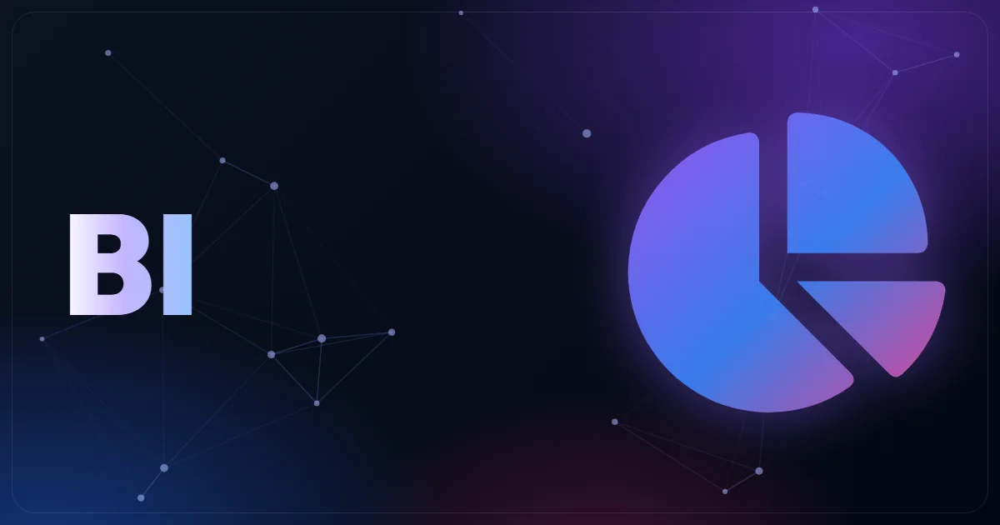
С каждым годом количество данных в различных базах растет в геометрической прогрессии — этот фактор определяет интенсивный рост интереса к Big Data. Сегодня облачная база данных Google BigQuery — один из наиболее востребованных инструментов, решающих проблему хранения и быстрой обработки больших массивов данных. Мы выяснили способы соединения хранящихся в Google BigQuery данных с различными инструментами визуализации и составили подробный мануал по настройке их интеграции.

Как интегрировать BigQuery с Google Таблицами
Сначала необходимо установить дополнение к Google Таблицам OWOX BI BigQuery Reports. В меню «Дополнения» выбираем пункт «Установить дополнение». В поиске вводим название «OWOX BI BigQuery Reports», затем нажимаем кнопку «+ Бесплатно».
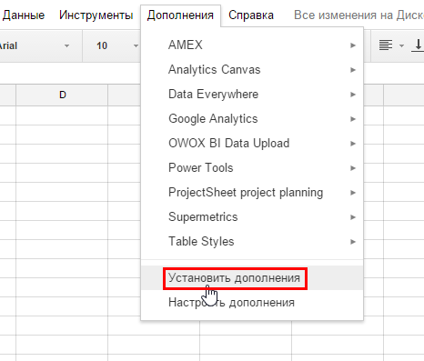
Даем все необходимые разрешения установленному дополнению — кнопка «Разрешить».
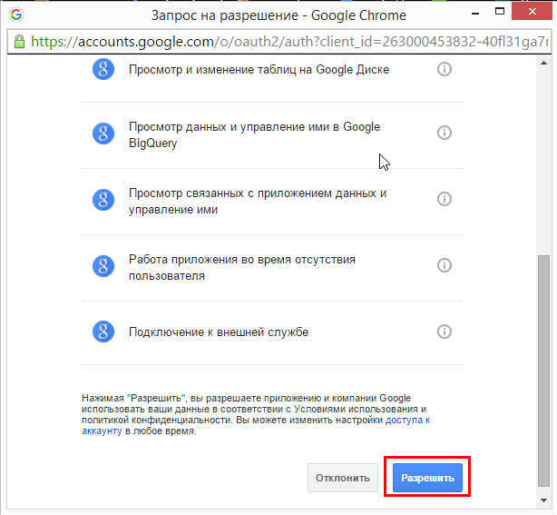
В списке установленных дополнений появится «OWOX BI BigQuery Reports»:
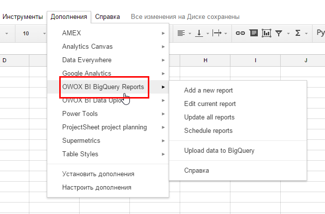
Выбираем пункт «Add a new report», затем — нужный проект в появившемся SideBar. После чего выбираем пункт «Add new query».
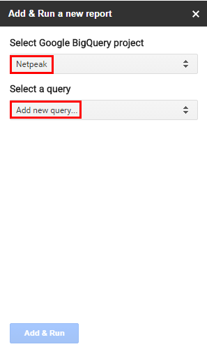
В появившемся диалоговом окне «Add new query» вводим текст SQL запроса и жмем на кнопку «Save & Run».
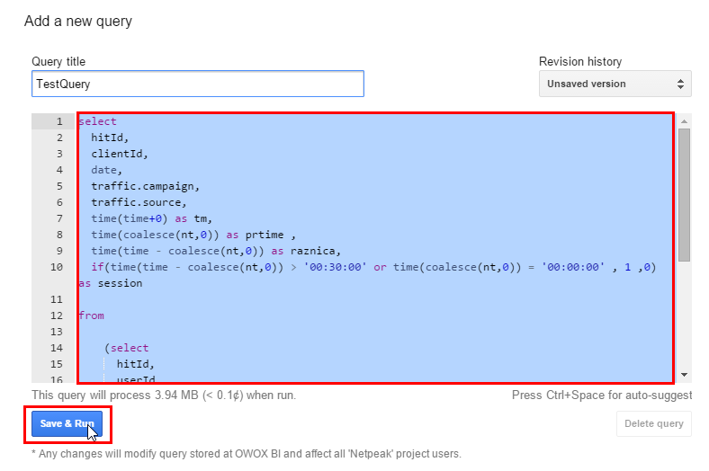
В вашей Google Таблице будет создан новый лист, название которого будет совпадать с названием запроса. На этот лист импортируется результат работы вашего запроса. С помощью пункта меню «Schedule reports» описанного дополнения можно задать настройки автоматического обновления результатов запроса через определенный интервал времени.
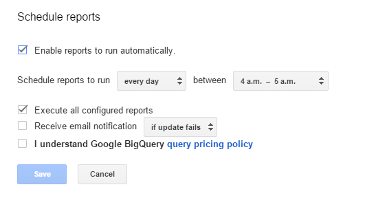
Как интегрировать BigQuery с Excel
Для начала необходимо скачать IQY файл, который и является коннектором между BigQuery и Excel. Затем указываете аккаунт Google, к которому привязан нужный вам проект в BigQuery. Перейдя по указанной ссылке, нажмите на «Click here to download IQY file».
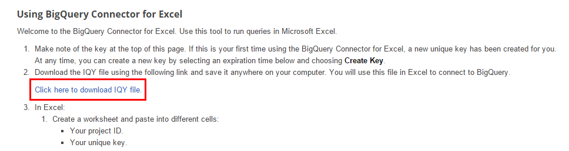
Далее вам необходимо создать ключ доступа. Переместитесь вниз по странице загрузки IQY файла к пункту «Creating a new key», установите время действия созданного ключа доступа. Максимально возможное время — 30 дней.
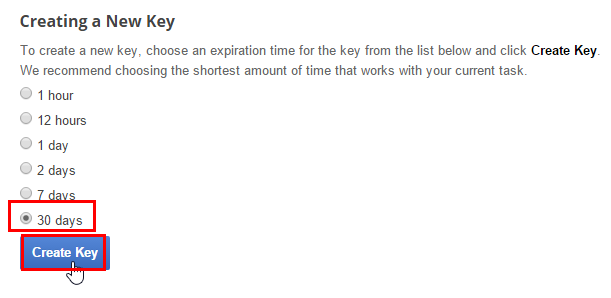
Далее следует опять подняться к началу страницы и скопировать сгенерированный ключ в буфер обмена.
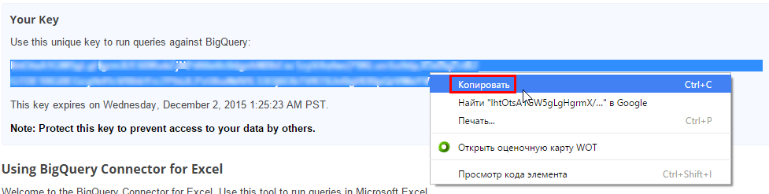
После этого открываем Excel и подписываем ячейки на новом листе:
- ProjectID;
- Key;
- Query.
Напротив ячейки ProjectID требуется указать ID нужного вам проекта. Его можно вытянуть из URL проекта в BigQuery.
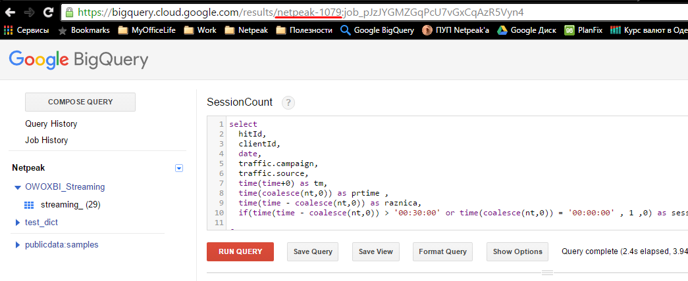
Напротив ячейки «Key» вводим скопированный раннее в буфер обмена ключ доступа. Напротив ячейки «Query» вводим текст SQL запроса, но в 1 ячейку можно ввести не более 256 символов. Для ввода более длинного запроса вы можете просто разместить разные части запроса в разных ячейках. В результате созданный вами лист будет выглядеть так:
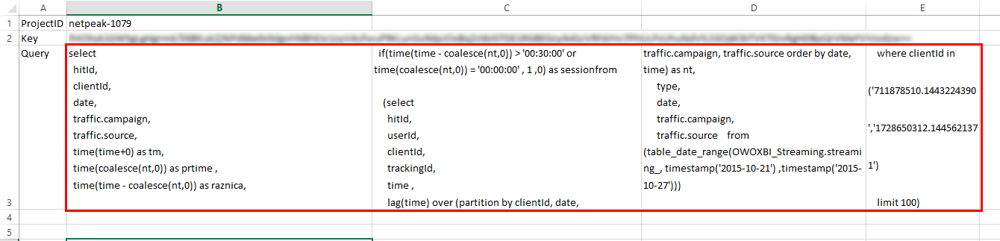
Как видно на скриншоте, текст запроса растянут на четыре ячейки в диапазоне B3:E3 (потому что в одной ячейке можно вместить не более 256 символов).
То, как вы разделите запрос, никакой роли не играет — он в любом случае будет работать.
Переходим на вкладку «Данные» и в группе «Получение внешних данных» выбираем пункт «Существующие подключения».
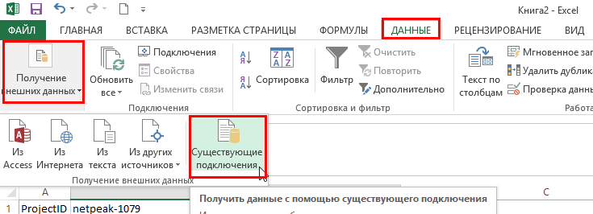
В открывшемся диалоговом окне жмем кнопку «Найти другие».
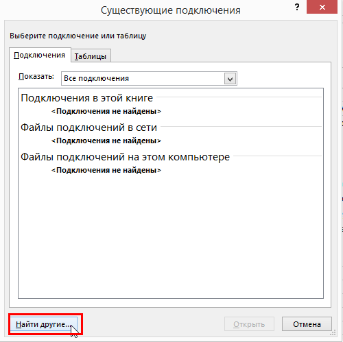
Далее выбираем скачанный ранее IQY файл и жмем «Открыть».
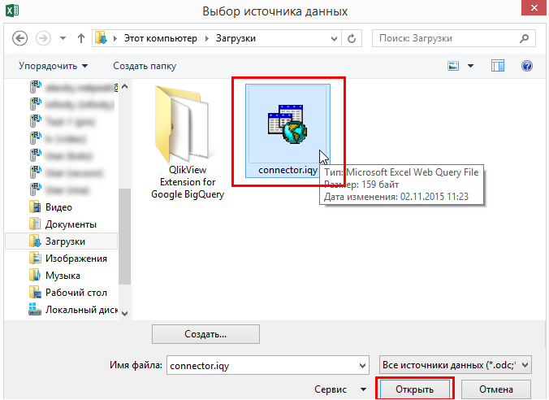
Теперь необходимо указать, куда следует поместить результат выполнения SQL запроса.
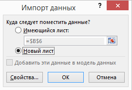
Далее указываем ячейки, в которых расположен текст SQL запроса. В нашем случае он располагается в четырех ячейках B3:E3.
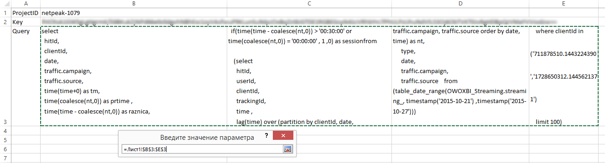
Указываем ячейку, в которой введен ID проекта.
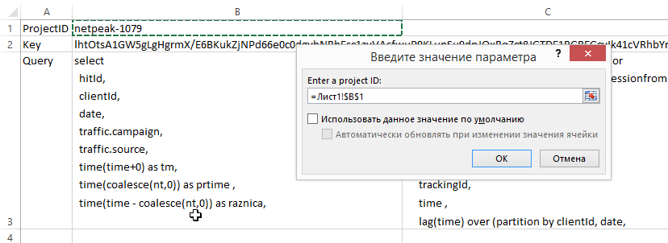
Указываем ячейку, в которой хранится ключ доступа.
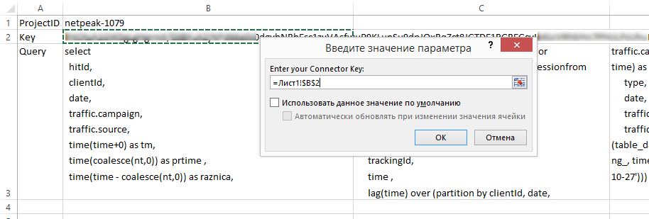
После нажатия ОК результат SQL вашего запроса будет загружен на новый лист.
К сожалению, на момент написания статьи нет коннектора, который мог бы импортировать данные из BigQuery напрямую в модель данных Excel.
Как интегрировать BigQuery с QlikView
Для интеграции между Google BigQuery и QlikView нам необходим специальный коннектор. Сам коннектор бесплатный, но доступ предоставляется только пользователям, которые пользуются платными лицензиями QlikView. После скачивания и установки коннектора необходимо создать ClientID. Для этого заходим в левое меню консоли Google Cloud, выбираем пункт «Credentials» из группы «APIs & auth». Жмем «Add credential» и выбираем «OAuth 2.0 client ID».
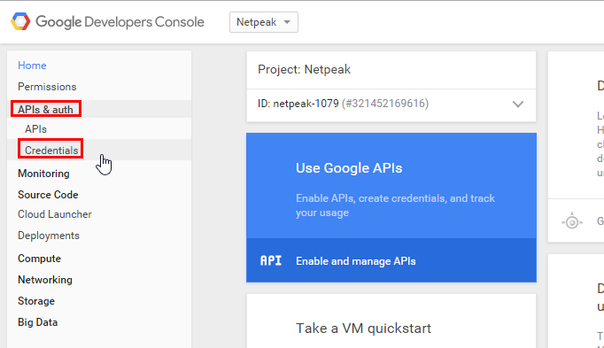
Потом выбираем тип приложения «Other», задаем имя «ClientID» и нажимаем кнопку «Create».
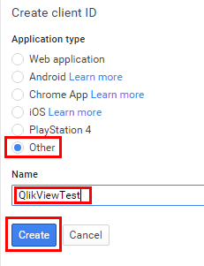
Создаем ClientID и ключ доступа к нему.
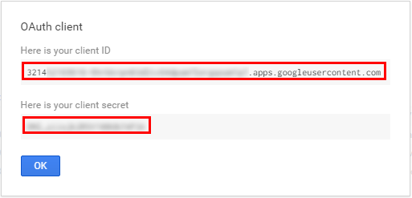
Теперь можно открыть редактор скриптов в QlikView и настроить подключение. В списке возможных коннекторов теперь есть «BigQuery». Выбираем его и жмем кнопку «Соед…».
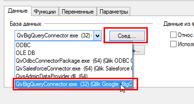
Вводим необходимую для подключения информацию. Заполняем поля Client ID и Client secret и жмем Authorize.
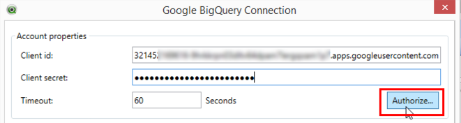
Даем разрешение на доступ коннектора к данным, хранящимся в BigQuery.
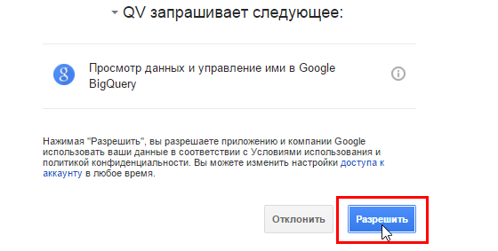
После авторизации будет заполнена информация по существующим в аккаунте проектам и наборам данных, вам остается выбрать нужный набор данных и нажать ОК.
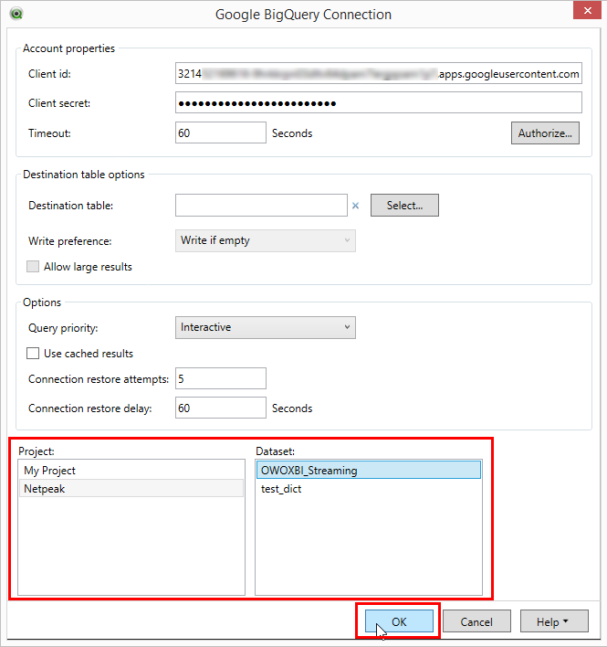
В редакторе скриптов будет сгенерирована строка подключения к Google BigQuery.
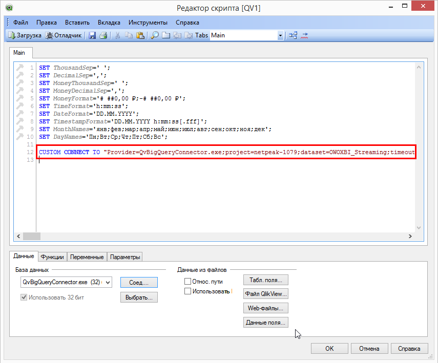
Остается только добавить текст нужного SQL запроса под строкой подключения и загрузить данные.
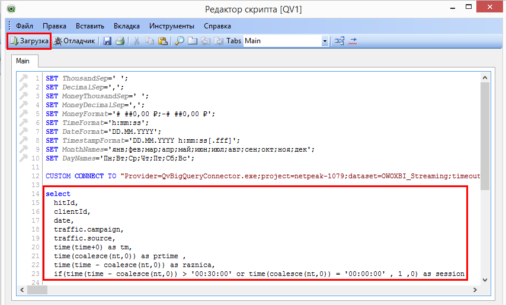
После этого вы получите подтверждение загрузки в модель данных QlikView.
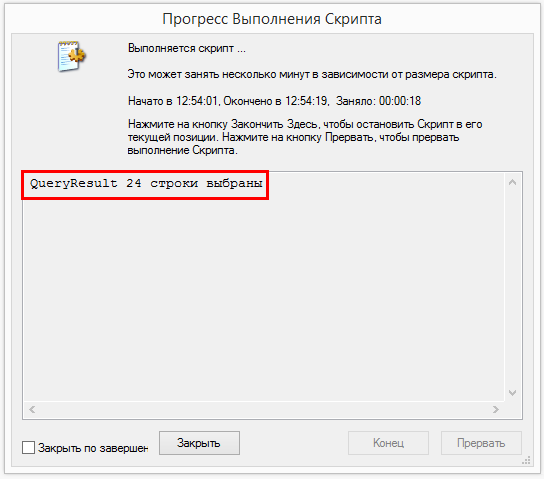
Как интегрировать Google BigQuery с Tableau
В Tableau существует встроенный коннектор к BigQuery, поэтому дополнительно скачивать ничего не потребуется.
На данный момент коннектор, соединяющий Tableau и Google BigQuery, доступен только в версии Tableau Desktop Professional Edition.
Чтобы загрузить данные из Google BigQuery, выберите в группе «To a server» пункт «More Servers». В меню появится «Google BigQuery».
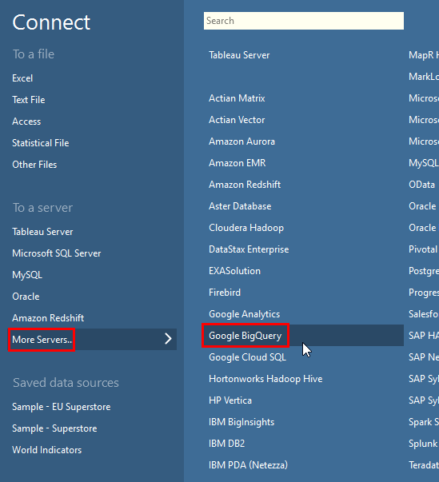
Заходим в аккаунт Google.
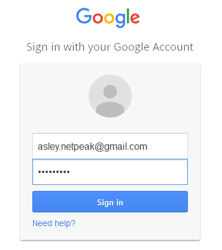
Выбираем нужный проект и набор данных из выпадающего списка.
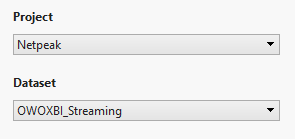
Далее можем выбрать любую таблицу, либо ввести текст нужного нам SQL запроса, нажав кнопку «New Custom SQL».
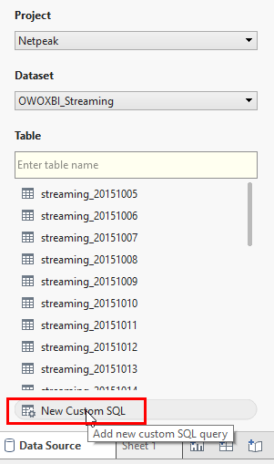
После нажатия OK ваш запрос появится в рабочей области.
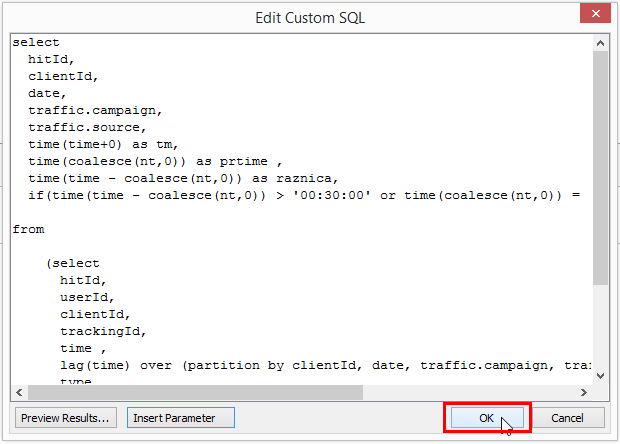
Теперь вы можете строить любую визуализацию, создав новый рабочий лист.
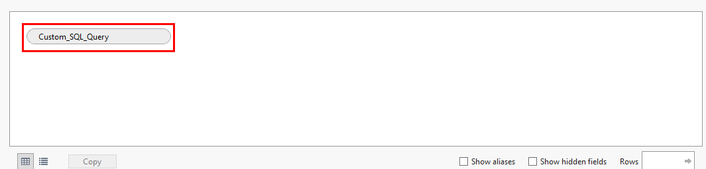
Как интегрировать Google BigQuery с BIME Analytics
При первом запуске BIME сразу предлагает выбрать нужный коннектор. Для интеграции выбираем из списка Google BigQuery.
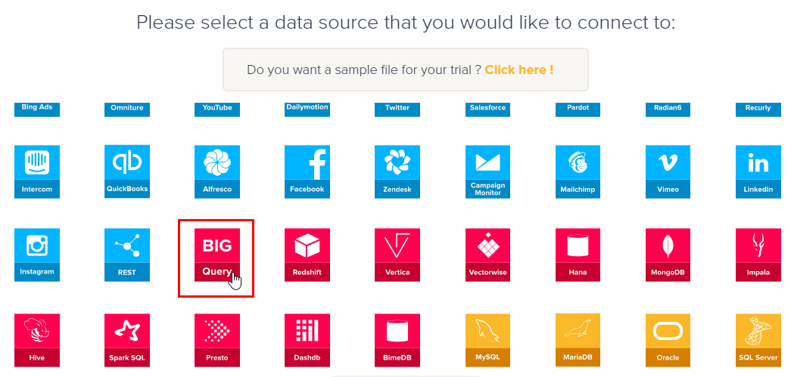
Жмем «Аутентификация через Google».
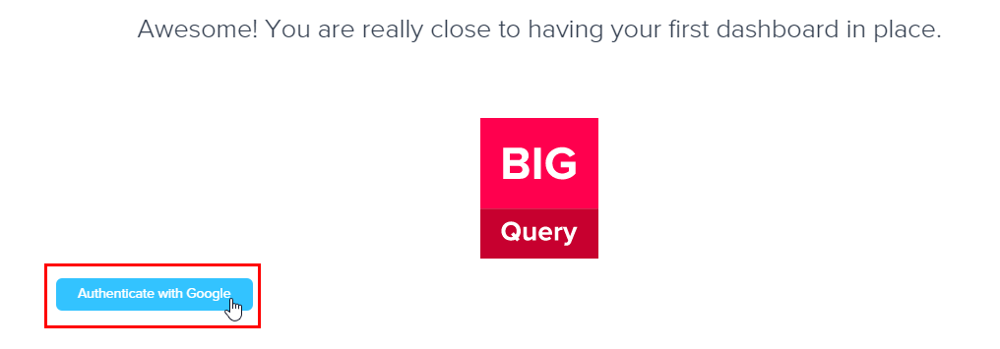
Даем разрешение BIME на автономный доступ к данным, хранящимся в BigQuery.
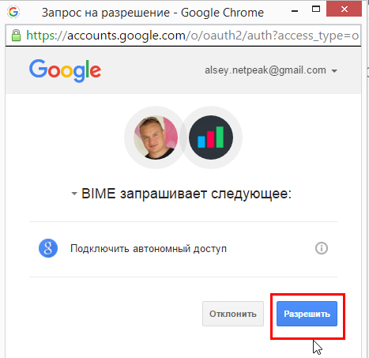
Теперь у нас есть возможность выбрать нужный проект и набор данных, а также выбрать один из трех возможных способов интеграции:
- Single — выбор одной конкретной таблицы из набора данных.
- Union — выбор ряда таблиц из набора данных, все таблицы должны иметь одинаковую структуру.
- Custom дает возможность ввести текст SQL запроса к данным.
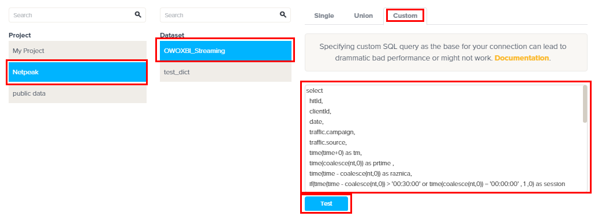
В данном случае нас интересует загрузка результата запроса. Вводим текст нашего SQL запроса и жмем «Test». Если тестирование запроса не выявило никаких ошибок, нажимаем «Next».
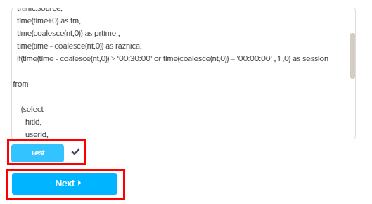
Начнется процесс загрузки данных в BIME для дальнейшего построения нужной вам визуализации.
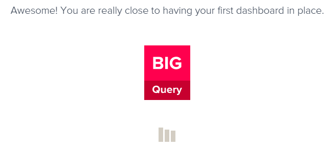
Подведем итог
Теперь вы знаете, как подключать различные инструменты, начиная от бесплатных (Google таблицы) и заканчивая довольно дорогими (Tableau) к облачной базе данных Google BigQuery. Честно говоря, Google BigQuery хороша всем, кроме одного: новичку понадобятся недели, а может, и месяцы, чтобы разобраться в ней. Например, в Украине тех, кто умеет работать с QlikView, Tableau и BIME можно пересчитать на пальцах. Небольшое сравнение, насколько хорошо и удобно работать с данными из BigQuery в упомянутых BI-платформах.
Таблица баллов основывается только на моем субъективном мнении.
| BI-платформы / электронные таблицы | Удобство интеграции с BigQuery | Удобство работы с данными | Стоимость |
| Google Spreadsheets | Легко подключаемый и довольно простой в понимании коннектор от OWOX. 4 балла | В Google Таблицах неудобно работать с загруженными данными в связи с тем, что в принципе отсутствует понятие модели данных. Поэтому данные можно загрузить только непосредственно на рабочий лист. При этом в Google SpreadSheets имеется ограничение в 2 млн. ячеек на один документ, то есть загрузить данные можно в рамках этого предела.2 балла | Бесплатно |
| Microsoft Excel | Не очень удобный коннектор, ключ доступа предоставляется максимум на 30 дней. Из-за этого придется часто генерировать новый ключ для обновления данных. 3 балла | Сама по себе работа с данными в Excel очень удобна, но коннектор, написанный для интеграции Excel с Google BigQuery, оставляет желать лучшего и не имеет возможности загрузить данные непосредственно в модель данных а не на рабочий лист. В связи с чем при интеграции с BigQuery вы сталкиваетесь с ограничением в 1048576 строк, при этом размер файла будет очень большим. <4 балла | ~100 USD |
| QlikView | Достаточно простой в обращении коннектор, но, к сожалению, идет отдельно от самой платформы и для интеграции необходимо создавать в Google аккаунте Client ID. 3 балла | QlikView очень удобен в работе с загруженными из BigQuery данными, доступен весь инструментарий визуализации данных. 5 баллов | Бесплатная персональная версия, полный функционал от 1010 EUR |
| Tableau | Встроенные и интуитивно понятный коннектор. 5 баллов | Работа по визуализация в Tableau уступает по удобству Microsoft Excel и QlikView, но тем не менее имеет достаточно мощный функционал. Что касается данных, загруженных из BigQuery, никаких ограничений в работе нет, доступен весь функционал. 4 балла | Работа с BigQuery доступна только в Professional Edition стоимостью 1999 USD |
| BIME | Встроенный и интуитивно понятный понятный коннектор к BigQuery. 5 баллов | BIME имеет довольно обширный инструментарий в работе с визуализацией данных, интуитивно понятный интерфейс позволяет быстро и удобно строить дашборды любой сложности, никаких ограничений при работе с данными загруженными из BigQuery нет. 5 баллов | Работа с BigQuery доступна в тарифном плане «Big data» стоимостью 690 USD / месяц. |
Также я сравнил перечисленные BI-платформы по удобству интеграции и работы с Google BigQuery:
| BI-платформы / электронные таблицы | Удобство интеграции с BigQuery | Удобство работы с данными |
| Google Spreadsheets | 4 | 2 |
| Microsoft Excel | 3 | 4 |
| QlikView | 3 | 5 |
| Tableau | 5 | 4 |
| BIME | 5 | 5 |
Надеюсь, эта инструкция сделает работу с облачными базами данных проще. Но если до сих пор непонятно, готов разъяснить сложные моменты в комментариях. А за комплексной помощью в настройке визуализации данных обращайтесь к нам в Netpeak — мы поможем.